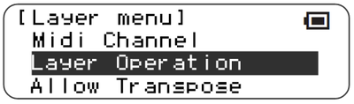
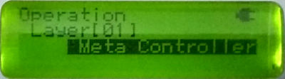
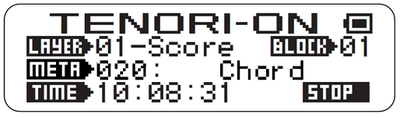
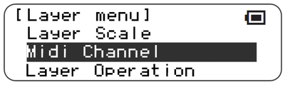
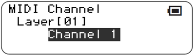
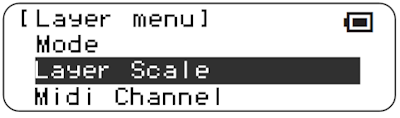
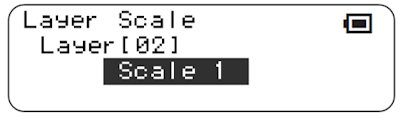
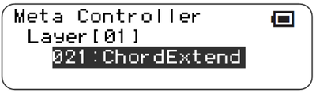
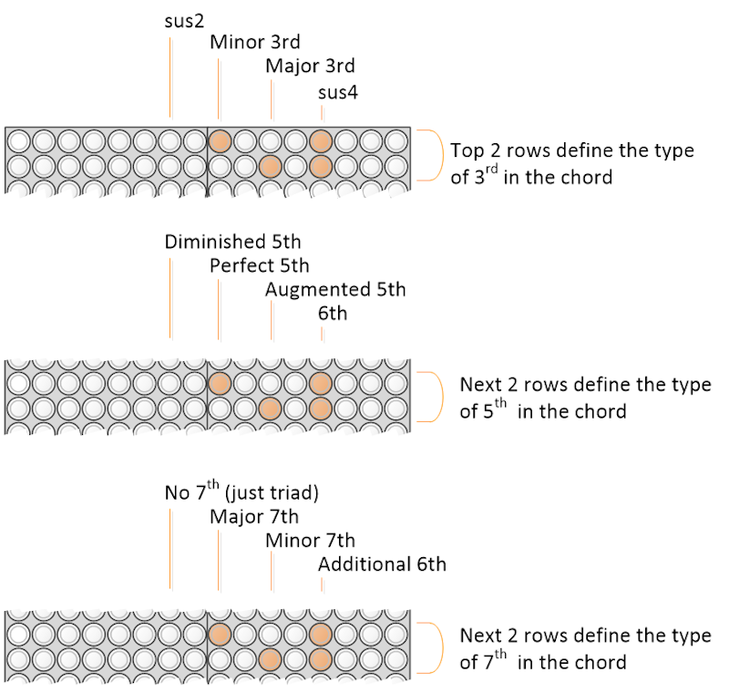
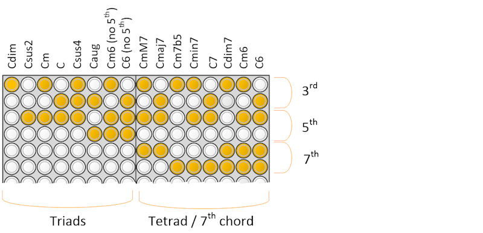

Chord Meta
This function introduces a chord selection meta controller.
This is inspired by several synthesisers that have chord generators, for example the excellent NDLR from Conductive Labs. This controller generates a custom scale, only containing the notes from the chord, that other layers can use to play notes from - it does not play notes on its own.
Two meta controllers are provided - a basic “Chord” meta controller, and a more advanced “Chord Extend” meta controller inteded only for Score type layers that allows finer control over the chord.
You don’t need any music theory to use this, but some of the explanation below might have some theory in it. Easiest explanation is to just try it.
Basic Chord Meta controller
Introduction
The meta controller is selected in the usual way. Pick a score layer. Set the layer mode to “Meta Controller” and then select, using [L1] the Chord meta controller:
|  |  |
|---|---|
 |
 |
The destination for the generated chord notes has to be selected, via the “Midi channel” menu. By selecting midi channel 1, you select layer scale 1. (I will at some point make the midi channel menu item context dependent).
|  |  |
|---|
If you want to hear sounds, go to another layer that contains an actual instrument, and set its layer scale to Layer scale user 1. Enter a whole bunch of notes. You won’t hear anything at the moment.
|  |  |
|---|
Go back to the Chord layer. Set an LED, e.g. on the bottom row. When encountered, the layer scale will be set to the “I” chord (i.e. 1/3/5 of the current scale). You will hear the instrument layer playing notes from this chord.
Changing the note in the chord layer will change the generated chord. You can, for example, generate the ubiquitous “I-V-vi-iv” sequence.
Details 1 - the generated scale
The bottom 4 notes of the generated scale are guaranteed to be the root, 3rd, 5th and 7th (or, if not present in the chord, the root again). This is intended to drive “drone” type notes.
The remainder 12 notes of the generated scale follow the 1-3-5 and 7 if available, repeatedly, allowing arpeggiated motifs. The transposition and chord inversion are chosen to try to make the XXth note match C4 so that changing from triad chords to seventh chords doesn’t change the playing octave too much.
Details 2 - the nature of the chord
The chord generated will depend on (a) the actual scale mode (Ionian, Dorian, Harmonic minor etc.) and (b) the note selected in the chord layer. The bottom most note will select the I chord, then - going up - the II, III, IV, V, VI, VII. Whether the chord is Major (e.g. IV) or minor (e.g. iv) depends on the scale mode since the notes are selected from within the scale mode. Relevant notes are chosen within the allowed scale. A ferocious looking table of chord equivalence is provided below.
Continuing up the note selection, a 7th is added, to give I7, II7, III7, etc.
The chords generated are as follows. The assumption is that the root note of the scale is C. I’ve tried to use common representation.
- Triads
- C = C Major
- Cm = C minor
- C$\circ$ = C diminished
- C+ = C augmented
- Seventh chords
- Cmaj7 = C major 7th
- Cm7 = C minor 7th
- CmM7 = C minor-major 7th
- C$\circ$7 = C diminished 7th
- C$\varnothing$ = C half-diminished 7th (i.e. minor seventh flat five)
- C+M7 = C augmented major 7th
- C7 = C dominant seventh
| LED | Chord | Ionian | Dorian | Phyrigian | Lydian | Mixolydian | Aeolian | Locrian |
|---|---|---|---|---|---|---|---|---|
| 1 | I or i | C | Cm | Cm | C | C | Cm | C$\circ$ |
| 2 | II or ii | Dm | Dm | C# | D | Dm | D$\circ$ | C# |
| 3 | III or iii | Em | D# | D# | Em | E$\circ$ | D# | D#m |
| 4 | IV or iv | F | F | Fm | F#$\circ$ | F | Fm | Fm |
| 5 | V or v | G | Gm | G$\circ$ | G | Gm | Gm | F# |
| 6 | VI or vi | Am | A$\circ$ | G# | Am | Am | G# | G# |
| 7 | VII or vii | B$\circ$ | A# | A#m | Bm | A# | A# | A#m |
| 8 | I7 or i7 | Cmaj7 | Cm7 | Cm7 | Cmaj7 | Cmaj7 | Cm7 | C$\varnothing$ |
| 9 | II7 or ii7 | Dm7 | Dm 7 | C#maj7 | Dmaj7 | Dm7 | D$\varnothing$ | C#maj7 |
| 10 | III7 or iii7 | Em7 | D#maj7 | D#maj7 | Em7 | E$\varnothing$ | D#maj7 | D#m7 |
| 11 | IV7 or iv7 | Fmaj7 | Fmaj7 | Fm7 | F#$\varnothing$ | Fmaj7 | Fm7 | Fm7 |
| 12 | V7 or v7 | Gmaj7 | Gm7 | G$\varnothing$ | Gmaj7 | Gm7 | Gm7 | F#maj7 |
| 13 | VI7 or vi7 | Am7 | A$\varnothing$ | G#maj7 | Am7 | Am7 | G#maj7 | G#maj7 |
| 14 | VII7 or vii7 | B$\varnothing$ | A#maj7 | A#m7 | Bm7 | A#maj7 | A#maj7 | A#m7 |
| 15 | I7 or i7 | Cmaj7 | Cm7 | Cm7 | Cmaj7 | Cmaj7 | Cm7 | C$\varnothing$ |
| 16 | II7 or ii7 | Dm7 | Dm 7 | C#maj7 | Dmaj7 | Dm7 | D$\varnothing$ | C#maj7 |
For Chromatic and “User” scales, all chords are Major.
| LED | Okinawa | Harm Minor |
Melodic Minor |
Bebop Dominant |
Blues 6 | Blues 9 | Whole tone |
|---|---|---|---|---|---|---|---|
| 1 | C | Cm | Cm | C | Cm | C | C+ |
| 2 | Em | Dm$\circ$ | Dm | Dm | D#m | Dm | D+ |
| 3 | Fsus2 | D#+ | D#+ | E$\circ$ | Fsus2 | D# | E+ |
| 4 | G6 | Fm | F | F | F#6 | E$\circ$ | F#+ |
| 5 | Bsus4(#5) | G | G | G | D#/G | F | G#+ |
| 6 | C | G# | A$\circ$ | Am | D#m/A# | Gm | A#+ |
| 7 | Em | B$\circ$ | B$\circ$ | A# | Cm7 | Am | C+ |
| 8 | Fsus2 | CmM7 | CmM7 | B$\circ$ | D#m | A# | D+ |
| 9 | G6 | D$\varnothing$ | Dm7 | C7 | Fsus27 | B$\circ$ | E+ |
| 10 | Bsus4(#5) | D#+M7 | D#+M7 | Dm7 | F#6 | C7 | F#+ |
| 11 | C | Fm7 | F7 | E$\varnothing$ | D#sus2/G | Dm7 | G#+ |
| 12 | Em | Gmaj7 | Gmaj7 | F7 | D#m/A# | D#maj7 | A#+ |
| 13 | Fsus2 | G#maj7 | Am7 | Gm7 | Cm7 | E$\varnothing$ | C+ |
| 14 | G6 | B$\circ$7 | B$\varnothing$ | Am7 | D#m | F7 | D+ |
| 15 | Bsus4(#5) | CmM7 | CmM7 | A# maj7 | Fsus27 | Gm7 | E+ |
| 16 | C | D$\varnothing$ | Dm7 | B$\varnothing$ | F#6 | Am7 | F#+ |
Extended Chord meta controller
This is a slightly modified version of the above meta controller. It is selected in the usual way. Pick a score layer. Set the layer mode to “Meta Controller” and then select, using [L1] the Chord Extend meta controller:
|  |
|---|
This meta controller is for people who want finer detail control over the chords selected. It only operates correctly in score or scoreX modes; if this is applied to a non-score layer, it reverts to the behavior of the normal chord meta.
In score mode with the chord extend meta controller, the bottom 10 LEDs operate exactly as the chord meta controller, selecting a particular chord from the scale. However the top 6 LEDs act as chord modifier.
- the top 2 LEDs show the nature of the 3rd in the chord.
- the next 2 LEDs show the nature of the 5th in the chord
- the next 2 LEDs show the nature of the 7th in the chord

By selecting different combinations, large numbers of chord types can be selected. Below gives some examples of the most common chord types assuming the root note is C, but all sorts of advanced triads or 7th chords can be defined this way.

When changing the root note, the modifiers default to those matching the chord in the normal Chord metacontroller table above.
Compatibility Issues
None known.
Releases
First included in A037